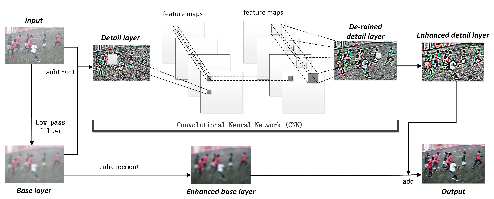

Xueyang Fu Jiabin Huang Xinghao Ding Yinghao Liao John Paisley
IEEE Transactions on Image Processing (TIP), 2017.
Abstract: We introduce a deep network architecture called DerainNet for removing rain streaks from an image. Based on the deep convolutional neural network (CNN), we directly learn the mapping relationship between rainy and clean image detail layers from data. Because we do not possess the ground truth corresponding to real-world rainy images, we synthesize images with rain for training. To effectively and efficiently train the network, different with common strategies that roughly increase depth or breadth of network, we utilize some image processing domain knowledge to modify the objective function. Specifically, we train our DerainNet on the detail layer rather than the image domain. Better results can be obtained under the same net architecture. Though DerainNet is trained on synthetic data, we still find that the learned network is very effective on real-world images for testing. Moreover, we augment the CNN framework with image enhancement to significantly improve the visual results. Compared with state-of-the-art single image de-rain methods, our method has better rain removal and much faster computation time after network training.
Paper: [pdf]
Training code: [Python code] (TensorFlow)
Testing code: [Matlab code] (MatConvNet)
Dataset: Our rainy image dataset is expanded and can be downloaded at here.
Our DerainNet is a plain CNN architecture that contains only 3 convolutional layers. The user can use Guided Filter to prepare training data and then simply modify other relative codes, such as Caffe or Matlab.
Framework:
